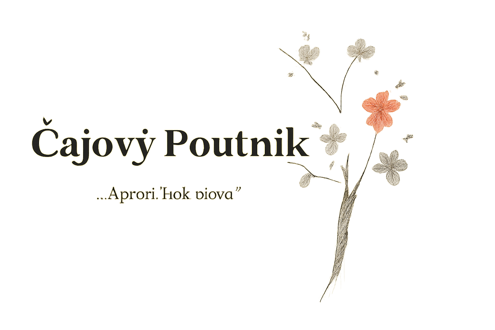

A první bylo Slovo
A první bylo Slovo —
ne aby vládlo,
ale aby se nabídlo.
Ne k soudu,
ale ke světlu.
Byl to šepot —
ne hluk,
ale rytmus mezi tichem a dechem.

O nás
Jsme Klub lunárních poutníků – prostor pro poezii, obrazy, kaligrafii a ticho mezi slovy.
Tvoříme s úctou k čaji, měsíci a příběhům, které se šeptají jen v noci.
Věříme, že každé Slovo má svůj čas – a každá Cesta svůj dech.